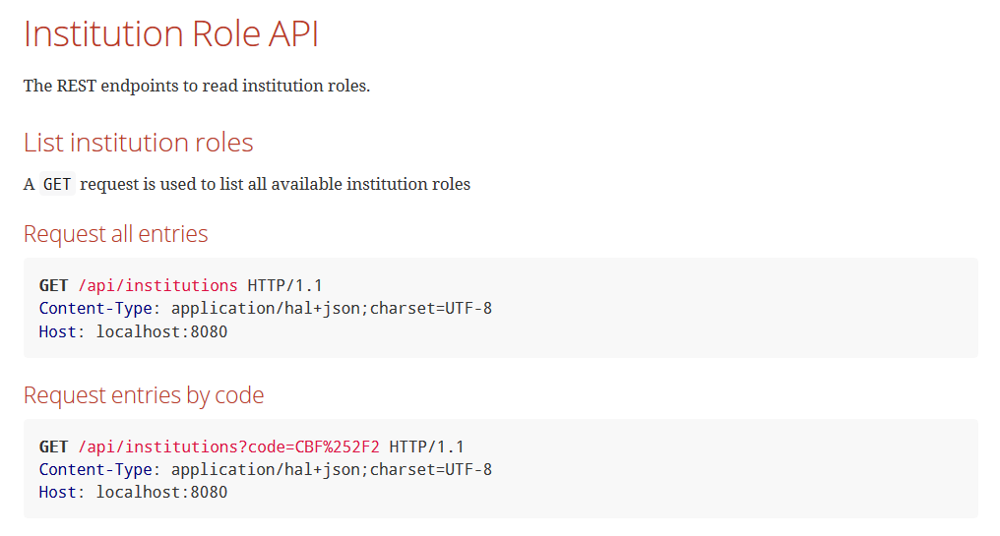

## Spring Rest Docs #### Implement & Documentation Created by [Arnošt Havelka](http://cz.linkedin.com/in/arnosthavelka/)
## Agenda 1. Implementation of RESTFull services 1. Documentation with Spring REST Docs
## 1. Implementation of RESTFull services 1. Technology 1. Web layer 1. Service layer 1. Persistence layer 1. Test 1. Summary
## 1.1 Technology * Spring MVC + JSR-303 for validation * Spring HATEOAS * Spring DATA JPA
## 1.2 Web layer [1/3] ### Service definition ``` @RestController @RequestMapping( value = InstitutionController.ROOT_PATH, produces = MediaTypes.HAL_JSON_UTF8_VALUE ) public class InstitutionController extends GenericController { static final String ROOT_PATH = API_PATH + "/institutions"; @Autowired protected InstitutionService instService; @Autowired protected ConvertService convertService; } ```
## 1.2 Web layer [2/3] ### List entities ``` @GetMapping @Transactional( readOnly = true ) public PagedResources<InstitutionRoleResource> list( @Valid InstitutionRoleSearchDTO searchDTO, Pageable pageable ) { Page<InstitutionRole> pagedResult = instService.search( searchDTO, pageable ); return new PagedResources<>( this.convertService.convert( pagedResult.getContent(), InstitutionRoleResource.class ), this.convertService.convertPage( pagedResult ) ); } ```
## 1.2 Web layer [3/3] ### Get entity detail ``` @GetMapping( value = "/{id}" ) @Transactional( readOnly = true ) public Resource<InstitutionRoleResource> get( @PathVariable( "id" ) Long id ) { InstitutionRole result = instService.get( id ).get(); return new Resource<>( this.convertService.convert( result, InstitutionRoleResource.class ) ); } ```
## 1.3 Service layer ``` @Service public class InstitutionService { @Autowired protected InstitutionRoleRepository instRoleRepo; public Page<InstitutionRole> search( InstitutionRoleSearchDTO searchDTO, Pageable pageable ) { Specification<InstitutionRole> spec = instRoleRepo.dynamicSearch( searchDTO ); return instRoleRepo.findAll( spec, instRoleRepo.preparePageRequest( pageable ) ); } public Optional<InstitutionRole> get( Long id ) { nonNull(id); return instRoleRepo.findById( id ); } } ```
## 1.4 Persistence layer [1/2] ### Repository definition ``` @Repository public interface InstitutionRoleRepository extends JpaRepository<InstitutionRole, Long>, JpaSpecificationExecutor<InstitutionRole> { Optional<InstitutionRole> findByInstitutionAndFunction( Institution inst, String function ); InstitutionRole findByInstitutionCodeAndFunction( String instCode, String function ); ... default Pageable preparePageRequest( Pageable pageable ) { // use default when necessary return of( pageNo, pageSize, sort ); } } ```
## 1.4 Persistence layer [2/2] ### Repository definition ``` default Specification<InstitutionRole> dynamicSearch( final InstitutionRoleSearchDTO searchDTO ) { return ( Root<InstitutionRole> root, CriteriaQuery<?> query, CriteriaBuilder cb ) -> { List<Predicate> predicates = new ArrayList<>(); if ( hasText( searchDTO.getCode() ) ) { predicates.add( cb.equal( root.get( institution ).get( CODE ), searchDTO.getCode() ) ); } if ( hasText( searchDTO.getName() ) ) { predicates.add( cb.like( cb.lower( root.get( institution ).get( NAME ) ), cb.literal( WILDCARD + searchDTO.getName().toLowerCase() + WILDCARD ) ) ); } if ( hasText( searchDTO.getInstRoleCode() ) ) { predicates.add( cb.equal( root.get( function ), searchDTO.getInstRoleCode() ) ); } return cb.and( predicates.toArray( new Predicate[predicates.size()] ) ); }; } ```
## 1.5 Test ``` @MockMvcTest @DisplayName( "verify that InstitutionController as MVC" ) public class InstitutionControllerTest { private static final String ROOT_PATH = "/api"; @Autowired private MockMvc mvc; @Test @DisplayName( "should list all institutions" ) void searchForInstitutions() throws Exception { mvc.perform( get( ROOT_PATH + "/institutions" ) .contentType( HAL_JSON_UTF8 ) ) .andExpect( status().isOk() ) .andExpect( content().contentTypeCompatibleWith( HAL_JSON_UTF8 ) ) .andExpect( jsonPath( "$._embedded.institutionRoleResources.*", hasSize( 2 ) ) ); } } ```
## 1.6 Summary [1/3] ### Pros * Traditional and straghtforward solution * Response can be in our way (HATEOAS, simple JSON, XML or eny other) * Part of the build (no issue with maven build) * Easy to add advanced validation (e.g. at least 1 argument has to be passed) * Easy to debug, tune or influence the behavior
## 1.6 Summary [2/3] ### Pros * Lousely coupling with clients (names of arguments, knowledge of data model) * General constraints (e.g. only active records) has to be defined for every table by the client (instead being the responsibility of tge REST service) * Each layer can have its own test
## 1.6 Summary [3/3] ### Cons * More initial effort * More classes
## 2. Documentation 1. Requirements 1. Spring REST Docs 1. Snippets generation 1. Creation of documentation 1. Summary
2.1 Requirements
## 2.2 Spring REST Docs * Produce documentation that is accurate, concise, and well-structured * Tightly integrated with your tests -> the documentation is always up to date * Two face generation * Creation of snippets from processed tests * generation of document by [AsciiDoctor](http://asciidoctor.org/) * Allows hand-written texts * Generation of WireMock can be done with [Spring REST Docs WireMock Integration](https://github.com/ePages-de/restdocs-wiremock)
## 2.3 Snippets generation [1/3] ### Configuration ``` @MockMvcTest @AutoConfigureRestDocs @DisplayName( "verify that InstitutionController as MVC" ) public class InstitutionControllerTest { private static final String ROOT_PATH = "/api"; @Autowired private MockMvc mvc; ... some tests ... } ```
## 2.3 Snippets generation [2/3] ### Basic usage ``` @Test @DisplayName( "should list all institutions" ) void searchForInstitutions() throws Exception { mvc.perform( get( ROOT_PATH + "/institutions" ) ... same as before ... .andExpect( jsonPath( "$._embedded.institutionRoleResources.*", hasSize( 2 ) ) ) .andDo( document( "inst-role-list", responseHeaders( headerWithName( CONTENT_TYPE ) .description( "... some text ... `" + HAL_JSON_UTF8 + "`" ) ) ) ); } ```
## 2.3 Snippets generation [3/3] ### Advanced usage ``` @Test @DisplayName( "should get institution by ID" ) void getInstitutionById() throws Exception { mvc.perform( get( ROOT_PATH + "/institutions/{id}", -1 ) ... same as before ... .andExpect( jsonPath( "role", is( "FUNDMGR" ) ) ) .andDo( document( "inst-role-get", pathParameters( parameterWithName( "id" ).description( "Unique identifier of institution role" ) ), responseFields( fieldWithPath( "id" ).description( "Unique identifier of the city." ), fieldWithPath( "code" ).description( "Code of the institution." ), fieldWithPath( "name" ).description( "Name of the institution." ), fieldWithPath( "role" ).description( "Code of the institution role." ) ) ) ); } ```
## 2.4 Creation of documentation [1/3] ### Configuration ``` <build> <plugins> <plugin> <groupId>org.asciidoctor</groupId> <artifactId>asciidoctor-maven-plugin</artifactId> <version>1.5.6</version> <executions> <execution> <id>generate-docs</id> <phase>package</phase> <goals> <goal>process-asciidoc</goal> </goals> <configuration> <backend>html</backend> <doctype>book</doctype> <attributes> <snippets>${project.build.directory}/generated-snippets</snippets> </attributes> <sourceDirectory>${basedir}/src/main/resources/asciidoc</sourceDirectory> <outputDirectory>${project.build.directory}/generated-docs</outputDirectory> </configuration> </execution> </executions> </plugin> </plugins> </build> ```
## 2.4 Creation of documentation [2/3] ### Configuration ``` = POC of REST API Documentation for Oxygen 1.2 JUnit book Version 0.3.1-SNAPSHOT :doctype: book ... more headers ... [[overview]] = Overview [[overview-http-verbs]] == HTTP verbs RESTful notes tries to adhere as closely as possible to standard HTTP and REST conventions in its use of HTTP verbs. ... more text ... [[resources-inst-role]] == Institution Role API The REST endpoints to read institution roles. [[resources-inst-role-get]] === Get the institution role by ID A `GET` request is used to access the institution role by identifier. ==== Path Parameters include::{snippets}/inst-role-get/path-parameters.adoc[] ==== Request structure include::{snippets}/inst-role-get/http-request.adoc[] ==== Response Fields include::{snippets}/inst-role-get/response-fields.adoc[] ==== Example response include::{snippets}/inst-role-get/http-response.adoc[] ==== CURL request include::{snippets}/inst-role-get/curl-request.adoc[] ```
2.4 Creation of documentation [3/3]
Result

## 2.5 Summary [1/2] ### Pros * Documentation is always up to date (as far as tests are up to date) * Hand written text or graphics can be mixed with * Standard Spring project * Integral part of test * Forces to write better tests -> * Fails when documentation is not up to date
## 2.5 Summary [2/2] ### Cons * Missing browser / client (HAL browser can be used for that) * Missing autogeneration feature
THE END
Thank you!